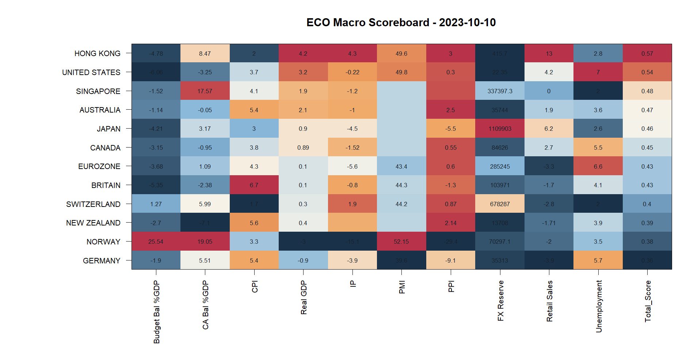
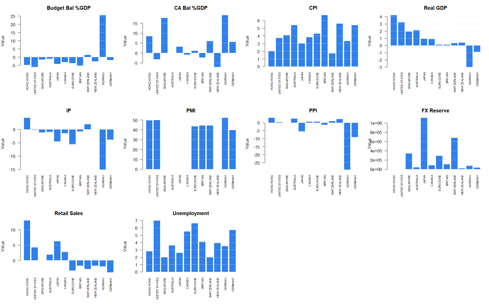
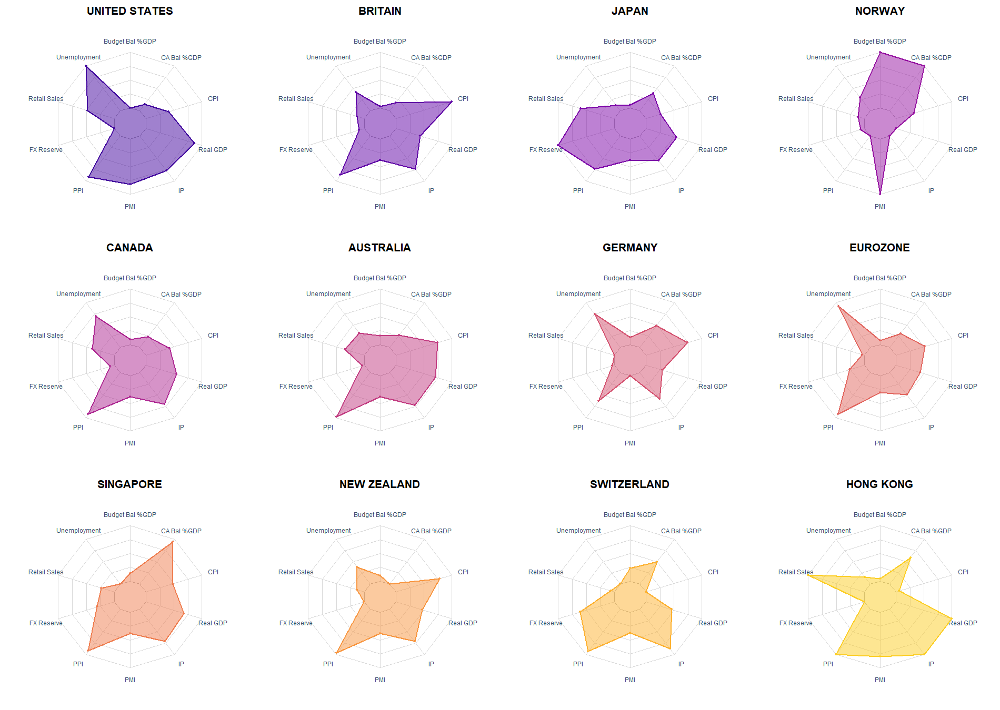

| Country | Budget Bal %GDP | CA Bal %GDP | CPI | Real GDP | IP | PMI | PPI | FX Reserve | Retail Sales | Unemployment | Total_Score |
|---|---|---|---|---|---|---|---|---|---|---|---|
| HONG KONG | -4.78 | 8.47 | 2.0 | 4.200 | 4.30 | 49.60 | 3.00 | 415.700 | 13.000 | 2.8 | 0.5653085 |
| UNITED STATES | -6.06 | -3.25 | 3.7 | 3.200 | -0.22 | 49.80 | 0.30 | 22.348 | 4.200 | 7.0 | 0.5384055 |
| SINGAPORE | -1.52 | 17.57 | 4.1 | 1.900 | -1.20 | NA | NA | 337397.300 | 0.000 | 2.0 | 0.4797753 |
| AUSTRALIA | -1.14 | -0.05 | 5.4 | 2.100 | -1.00 | NA | 2.50 | 35744.000 | 1.900 | 3.6 | 0.4654882 |
| JAPAN | -4.21 | 3.17 | 3.0 | 0.900 | -4.50 | NA | -5.50 | 1109903.000 | 6.200 | 2.6 | 0.4629126 |
| CANADA | -3.15 | -0.95 | 3.8 | 0.891 | -1.52 | NA | 0.55 | 84626.000 | 2.700 | 5.5 | 0.4453332 |
| EUROZONE | -3.68 | 1.09 | 4.3 | 0.100 | -5.60 | 43.40 | 0.60 | 285245.000 | -3.300 | 6.6 | 0.4269959 |
| BRITAIN | -5.35 | -2.38 | 6.7 | 0.100 | -0.80 | 44.30 | -1.30 | 103971.000 | -1.700 | 4.1 | 0.4256255 |
| SWITZERLAND | 1.27 | 5.99 | 1.7 | 0.300 | 1.90 | 44.20 | 0.87 | 678287.000 | -2.800 | 2.0 | 0.4044154 |
| NEW ZEALAND | -2.70 | -7.10 | 5.6 | 0.400 | NA | NA | 2.14 | 13708.000 | -1.707 | 3.9 | 0.3945099 |
| NORWAY | 25.54 | 19.05 | 3.3 | -3.000 | -15.10 | 52.15 | -29.40 | 70297.100 | -2.000 | 3.5 | 0.3795743 |
| GERMANY | -1.90 | 5.51 | 5.4 | -0.900 | -3.90 | 39.60 | -9.10 | 35313.000 | -3.900 | 5.7 | 0.3621190 |